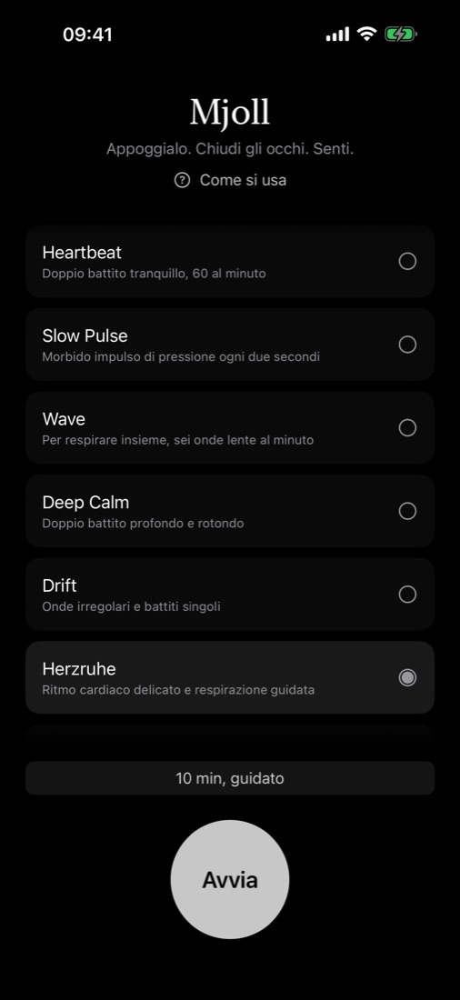
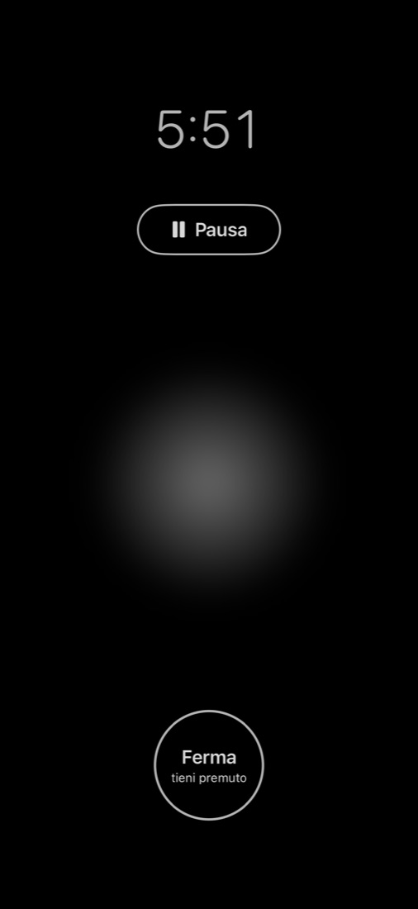
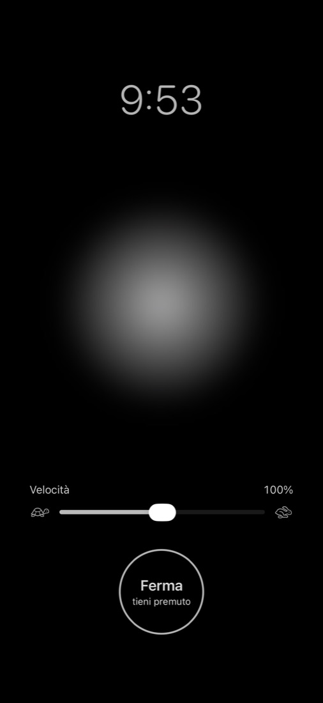
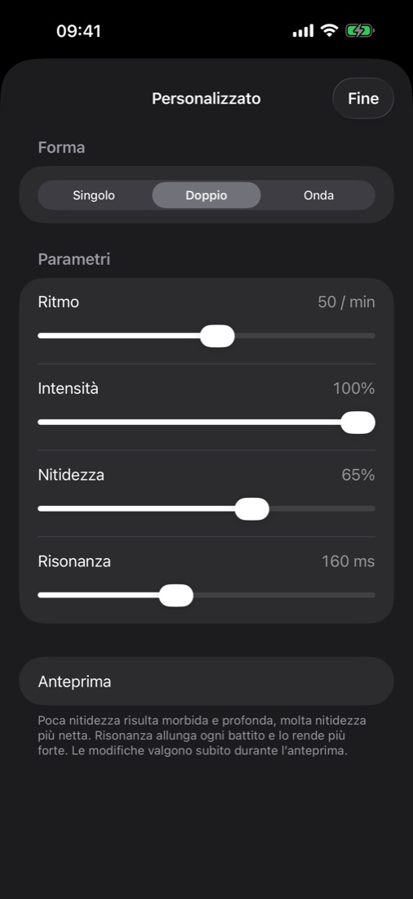

Mjoll Meditazione aptica per iPhone
Appoggialo. Chiudi gli occhi. Senti.
Mjoll è un’app tranquilla per iPhone dedicata alla meditazione aptica. Delicate trame di vibrazione guidano la tua attenzione: niente suoni, niente da guardare. Scegli un programma, imposta il tempo, chiudi gli occhi e senti.

Mjoll in norreno antico significa «neve fresca e silenziosa».
Prima della prima sessione, leggi le indicazioni di sicurezza. Non usare Mjoll se hai un pacemaker o un altro impianto medico.




Dove appoggiarlo
Si sente meglio dove l’iPhone tocca l’osso.
- Parte alta del petto – appoggia l’iPhone in alto sullo sterno, appena sotto la gola. Seduto o sdraiato, con lo schermo verso l’alto o verso il basso.
- Mano – tienilo senza stringere nel palmo aperto.
Come usarlo
- Meditazione – lascia che il battito sia la tua àncora. Quando la mente vaga, torna alla vibrazione.
- Respirazione – scegli Wave. Inspira mentre l’onda sale, espira mentre svanisce.
- Guidata – Herzruhe («cuore a riposo» in tedesco) dura dieci minuti: un ritmo cardiaco delicato per arrivare, una respirazione lenta e guidata, poi una chiusura silenziosa.
- Rallentare – prima di dormire, scegli un programma calmo e una durata breve. La sessione finisce da sola.
Regola la velocità di ogni programma sul tuo ritmo: Mjoll se la ricorda.
Meditazione senza suoni
Mjoll usa solo il tatto. Niente cuffie, niente voce, niente musica. Funziona a occhi chiusi, in una stanza condivisa, in viaggio, e anche se sei sordo o hai un calo dell’udito.
Domande prima dell’acquisto
Mjoll si accorge quando la mente divaga?
No. Mjoll non misura nulla di te e non valuta nulla. Il battito è un’ancora: quando ti accorgi che i pensieri vagano, ci torni da solo.
Posso bloccare l’iPhone durante una sessione?
No. iOS riproduce l’aptica solo mentre l’app è aperta. Per questo lo schermo resta acceso, attenuato quasi fino al nero. Se blocchi l’iPhone o cambi app, la sessione va in pausa.
C’è un abbonamento?
No. Mjoll è un acquisto unico. Nessun abbonamento, nessun acquisto in-app, nessun account.
Funziona senza internet?
Sì. L’app non si collega a nessun server. Solo l’acquisto e il download passano dall’App Store.
Su quali dispositivi funziona?
Su iPhone con iOS 17 o successivo. Mjoll non è disponibile per iPad, Mac o Apple Watch.
Uso sicuro
Non usare Mjoll se hai un pacemaker, un defibrillatore impiantato o qualsiasi altro impianto medico che possa essere influenzato da dispositivi elettronici o magneti. Mjoll ti chiede di appoggiare l’iPhone sul petto, vicino al punto in cui questi dispositivi si trovano di solito. La nostra raccomandazione è chiara: in questo caso non usare Mjoll.
- Non usare mai Mjoll mentre guidi, vai in bicicletta o usi macchinari. Mjoll ti invita a chiudere gli occhi e a rivolgere l’attenzione verso l’interno.
- Non addormentarti con l’iPhone sul corpo mentre è in carica. Il contatto prolungato della pelle con un dispositivo caldo può causare fastidio o ustioni.
- Interrompi se ti senti male o hai le vertigini. Se hai una malattia cardiaca o un’altra malattia grave o sei incinta, parla con il tuo medico prima di usare Mjoll.
- Mjoll è un’app di benessere, non un dispositivo medico. Non sostituisce un trattamento medico o psicologico. In caso di crisi, rivolgiti a un medico o ai servizi di emergenza.
Desideri per il prossimo aggiornamento?
Mjoll è creata da un singolo sviluppatore. Se hai un’idea, un desiderio o qualcosa che potrebbe funzionare meglio, scrivimi: mjollapp@icloud.com
Mjoll è un’app di benessere e rilassamento. Non è un dispositivo medico e non diagnostica, cura né previene alcuna condizione.